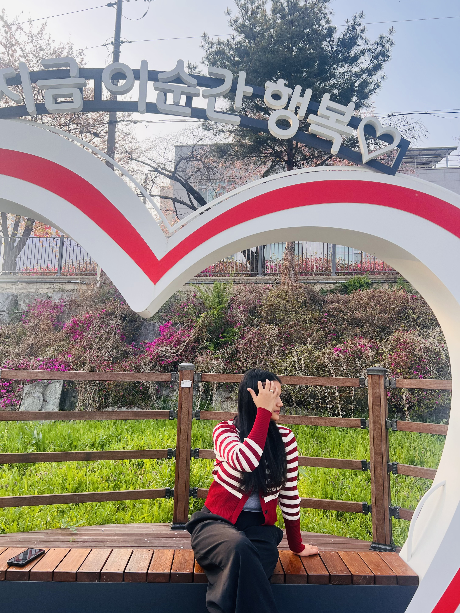

First thing first, you are the best thing I have ever had in my life. Yeah, I know I've hurted you more than anything else. But you are someone without whom I am incomplete. Realising ki yetro barsha bhayi sakyo hami 1 arka ko sath bhako pani. I guess neither you nor I ever realised kaile yek arka ma purai dubi sakyo hami. Yeah, but actually, I want to be with you till the end of my life. Thaha xa, really infront ma ta kaile approach gareko xaina, but yeah, I love you more than anything else. Tyo 1 week, every second I was missing you, writing about you, thinking about you, but sorry... my ego didn't let me text you. Sayad kahi kura ma ramro xu, ani dherai kura ma naramro. Tara sath na xodnu hai. Sake samhalnu, natra... khai, idk. Just I wanna say is, I love you more than anything. Realising every day, every second, every moment how much I actually love you, how much I miss you. And yeah... you were right. I don't know how to show it, but please never doubt how much I love you. ❤️
Anyway, wishing my love a very Happy Anniversary. I pray to God every single day that we'll be together as soon as possible. I can't wait to spend my life with the love of my life, holding my budi's hand, walking side by side through every happiness and every challenge. May God bless us with a beautiful future, endless love, and togetherness forever. I love you more than words can ever express. ❤️
And during that one week when I was missing you so much, I decided to try
something new. I know I'm definitely not a songwriter, it's short, a little
weird, and probably far from perfect, but every single word is dedicated to you with all my love.
❤️
So, this one's for you, my prettiest wife... Mrs. Aayusha Gautam Khadka.
Play Our Song